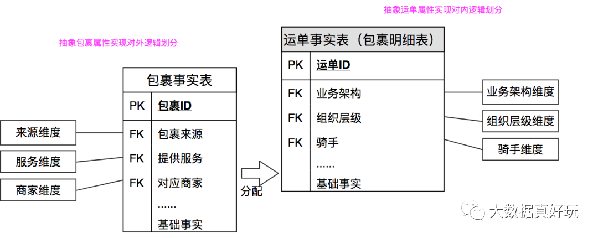
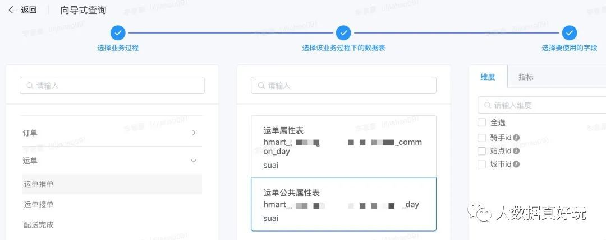

数据治理方法论和实践小百科全书
转自公众号：大数据真好玩
http://mp.weixin.qq.com/s?__biz=MzI0NjU2NDkzMQ==&mid=2247492238&idx=1&sn=1bb3ca042f2b79e32a70127f7e3547d1
点击上方蓝色字体，选择“设为星标”
回复”资源“获取更多惊喜

什么是数据治理？
数据治理是指从使用零散数据变为使用统一数据、从具有很少或没有组织流程到企业范围内的综合数据管控、从数据混乱状况到数据井井有条的一个过程。
从范围来讲，数据治理涵盖了从前端业务系统、后端业务数据库再到业务终端的数据分析，从源头到终端再回到源头，形成的一个闭环负反馈系统。从目的来讲，数据治理就是要对数据的获取、处理和使用进行监督管理。
是以服务组织战略目标为基本原则，通过组织成员的协同努力，流程制度的制定，以及数据资产的梳理、采集清洗、结构化存储、可视化管理和多维度分析，实现数据资产价值获取、业务模式创新和经营风险控制的过程。是一个持续性的服务，而不是一个有着明确范围的一锤子买卖。
为什么要实施数据治理？
经过 30 年的信息化建设，企业和政府部门都围绕着业务需求建设了众多的业务系统，从而导致数据的种类和数量大增，看似积累了众多的数据资产，实则在需要使用时，困难重重。
因为各个业务系统的建设都是围绕着业务需求来建设的，当业务环境发生变化时，原来的业务系统不能互联互通，不能满足跨部门、跨职能、跨组织的协作需求。
各个业务系统所产生的海量数据以复杂而分散的形式存储，导致数据之间的不一致和冲突等质量问题，从而导致数据在应用过程中的无所适从，难以实现数据的深度利用，从而难以实现业务模式创新和经营风险控制。
数据治理的目标是什么？
数据治理本身不是目的，它只是实现组织战略目标的一个手段。
从组织职能和体量大小方面来看，不同类型组织的数据治理目标大不相同：
集团企业总部和政府大数据管理局的目标是：制定数据政策、保障数据安全、促进数据在组织内无障碍共享，其重点目标是推进和保障数据战略的顺利实施。
企业和政府业务部门的目标是：通过提升信息管理能力，提升组织精细化管理水平，提高业务运营效率，增强组织决策能力和核心竞争力，从而为实现组织战略目标提供能力支撑，其重点目标是数据价值获取、业务模式创新和经营风险控制
数据治理包含哪些内容？
相对于国际组织和国际企业发布的数据治理框架，以下国家标准 GB/T 34960 发布的数据治理框架比较符合我国企业和政府的组织现状。包含顶层设计、数据治理环境、数据治理域和数据治理过程。
1.顶层设计是数据治理实施的基础，是根据据组织当前的业务现状、信息化现状和数据现状，设定组织机构的职权利，并定义符合组织战略目标的数据治理目标和可行的行动路径。
2.数据治理环境是数据治理成功实施的保障，指的是分析领导层、管理层、执行层等等利益相关方的需求，识别项目支持力量和阻力，制定相关制度以确保项目的顺利推进。
3.数据治理域是数据治理的相关管理制度，是指制定数据质量、数据安全、数据管理体系等相关标准制度，并基于数据价值目标构建数据共享体系、数据服务体系和数据分析体系。
4.数据治理过程就是一个 PDCA（plan-do-check-act）的过程，是数据治理的实际落地过程，包含确定数据治理目标，制定数据治理计划，执行业务梳理、设计数据架构、数据采集清洗、存储核心数据、实施元数据管理和血缘追踪，并检查治理结果与治理目标的匹配程度。
数据治理实施方法论
近年来，推动数据治理体系建设一直是业界探索的热点。结合多年政府各个部门及各类企业数据治理项目经验，百分点曾经提出数据治理项目开展过程中数据治理平台应具备 4 大能力：聚、治、通、用，以及项目实施总体指导思想：PDCA。
四大能力建设：
聚：数据汇聚能力
治：狭义数据治理能力，包括数据标准、数据质量、元数据、数据安全、数据生命周期、主数据。
通：数据拉通整合能力，原始业务数据分散在各业务系统中，数据组织是以满足业务流转为前提。
用：数据服务能力，数据资产只有真正赋能于前端业务才能发挥实际效用，所以如何让业务部门快速找到并便利的使用所需数据资产是数据治理平台的另一项核心能力。
P：plan，标准、规划、流程制定；D：do，产品工具辅助落地；C：check，业务技术双重检查保证；A：action，持续优化提升数据质量及服务。
结合数据治理项目实际落地实施过程以四大能力构建、PDCA 实施指导思想提出了“PAI”实施方法论，即流程化（process-oriented）、自动化（automation）、智能化（intelligence）三化论，以逐步递进方式不断提升数据治理能力，为政府和企业后续的数据赋能业务及数据催生业务创新打下坚实基础。
流程化将数据治理项目执行过程进行流程化梳理，同时规范流程节点中的标准输入输出，并将标准输入输出模板化。另外对各流程节点的重点注意事项进行提示。是数据治理工作开展第一步，是自动化和智能化的基础，将数据治理各节点开展过程中用到的内容进行梳理并规范，包括：业务流程图、网络架构图、业务系统台账等，行业知识梳理完善以后形成行业版知识（抽离通用版），如标准文件梳理：1.代码表整理，2.数据元标准整理（数据仓库行业模型对应标准梳理）。
自动化针对流程化之后的相关节点及标准输入输出进行自动化开发，减轻人力负担，让大家将精力放在业务层面及新技术拓展上，避免重复人力工作。如自动化数据接入及自动化脚本开发等。
智能化针对新项目或是新领域结合历史项目经验及沉淀给出推荐内容，比如模型创建、数据质量稽核规则等。在流程化、自动化基础之上针对数据拉通整合、主题模型、数据加工检查给出智能化建议，减少人工分析的工作。
数据治理需要哪些工具？
从技术实施角度看，数据治理包含“理”“采”“存”“管”“用”这五个步骤，即业务和数据资源梳理、数据采集清洗、数据库设计和存储、数据管理、数据使用。
数据资源梳理：数据治理的第一个步骤是从业务的视角厘清组织的数据资源环境和数据资源清单，包含组织机构、业务事项、信息系统，以及以数据库、网页、文件和 API 接口形式存在的数据项资源，本步骤的输出物为分门别类的数据资源清单。
数据采集清洗：通过可视化的 ETL 工具（例如阿里的 DataX，Pentaho Data Integration）将数据从来源端经过抽取 (extract)、转换 (transform)、加载 (load) 至目的端的过程，目的是将散落和零乱的数据集中存储起来。
基础库主题库建设：基础数据一般指的是核心实体数据，主题数据一般指的是某个业务主题数据，分析数据指的是基于业务主题数据综合分析而得的分析结果数据。基础库和主题库的建设就是在对业务理解的基础上，基于易存储、易管理、易使用的原则抽像数据存储结构，就是基于一定的原则设计数据库表结构，然后再根据数据资源清单设计数据采集清洗流程，将整洁干净的数据存储到数据库或数据仓库中。
元数据管理：元数据管理是对基础库和主题库中的数据项属性的管理，同时，将数据项的业务含义与数据项进行关联，还是自动化数据共享、数据交换和商业智能（BI）的基础。
血缘追踪：数据被业务场景使用时，发现数据错误，数据治理团队需要快速定位数据来源，修复数据错误。我们的实践是在元数据和数据资源清单之间建立关联关系，且业务团队使用的数据项由元数据组合配置而来，这样，就建立了数据使用场景与数据源头之间的血缘关系。
数据资源目录：基于业务场景和行业规范而创建，同时依托于元数据和基础库主题而实现自动化的数据申请和使用。一般应用于数据共享的场景。
质量管理：数据价值的成功发掘必须依托于高质量的数据，唯有准确、完整、一致的数据才有使用价值。因此，需要从多维度来分析数据的质量。例如：偏移量、非空检查、值域检查、规范性检查、重复性检查、关联关系检查、离群值检查、波动检查等等。
商业智能（BI）：数据治理的目的是使用，对于一个大型的数据仓库来说，数据使用的场景和需求是多变的，那么可以使用 BI 类的产品快速获取需要的数据，并分析形成报表。
数据共享交换：数据共享包括组织内部和组织之间的数据共享，共享方式也分为库表、文件和 API 接口三种共享方式，库表共享比较直接粗暴，文件共享方式通过 ETL 工具做一个反向的数据交换就可以实现。
通过大数据治理提供多种数据服务，从根本上解决数据问题
传统数据治理更多是在强调通过一些流程和制度把数据质量提高，并不能很好地解决以上种种数据问题。现在做数据治理，更多是为大家提供统一的数据服务的能力，从而让数据问题得以解决。
这样的环境应该包括哪些东西？需要能解决一些什么样的问题？简单总结就是四个字：管（Manage）、看（Browse）、找（Discover）、用（Apply）。
管。我们管的时候，需要建立整个企业层面的元数据以及跟合作伙伴打交道的元数据，这样才能把所有的数据和数据之间的关系统一整合起来，而这些元数据不是手工录入进去，而是采进去的。后面会讲到我们元数据的智能化采集，这是能体现数据治理智能化的概念之一。
看。“看”的部分是能展现数据治理效果、决定数据治理成败的主要部分。
找。要想实现“找”，要建立业务元数据跟技术元数据的匹配，其中的难点是如何通过业务含义来查找数据，如果从技术含义找这些数据其实问题不是很大。恰恰我们做数据分析做使用都是从业务含义上来找，需要找到语义以及语义的上下级的关系，并且做一个延伸的搜索。
用。
美团配送数据治理实践
1.定标准，提质量
第一步，主要围绕着业务标准、技术标准、数据安全标准和资源管理标准进行展开。通过业务标准，指导一线团队完成指标的规范定义，最终达成业务对指标认知一致性这一目标；然后通过技术标准来指导研发同学规范建模，从技术层面解决模型扩展性差、冗余多等问题并保障数据一致性；通过安全标准来指导我们加强数据的安全管控，确保数据拿不走、走不脱，针对敏感数据，用户看不懂；通过资源管理标准的制定，帮助我们在事前做好资源预算，在事中做好资源管理，在事后做好账单管理。
业务标准
业务团队负责指标的定义。
产研商分负责给出指标定义标准和辅助工具，辅助业务团队完成指标的规范定义，达成指标认知一致性这一目标。
最后由指标管理委员会负责指标的管理与运营，保障指标从创建、审核、上线以及到最后消亡的整个生命周期的运营。
技术标准
这里所说的技术标准，主要是针对数据RD提出的建模标准和数据生产规范，通过建模标准来明确数仓分层架构，并清晰定义每一层的边界与职责，采用维度建模的设计理念。我们的整个仓库架构分为四层：操作层、基础事实层、中间层和应用层，并在每一层同步制定对应的建模规范，如下图所示：
除了建模标准外，我们还制定了涵盖从生产到运维环节的生产规范以保障模型的质量，主要包括上线前的模型评审、生产过程中的完成元数据配置、DQC、SLA和生命周期设置以及上线后的日常运维机制等等。
仓库各层元数据管理标准
仓库各层生命周期管理策略
安全标准
首先要有数据的分级、分类标准，确保数据在上线前有着准确的密级。
第二，针对数据使用方，要有明确的角色授权标准，通过分级分类和角色授权，来保障重要数据拿不走。
第三，针对敏感数据，要有隐私管理标准，保障敏感数据的安全存储，即使未授权用户绕过权限管理拿到敏感数据，也要确保其看不懂。
第四，通过制定审计标准，为后续的审计提供审计依据，确保数据走不脱。
资源管理标准
在资源管理方面，配送技术工程部已经对资源管理涉及的内容进行了合理抽象和准确定义，抽象出租户、资源和项目组等概念。不管是后续的资源预算还是资源管理，我们都需要基于租户和项目组来进行运营，因此，对于业务团队而言，我们只需要将租户和项目组特定职能划分清楚，然后根据不同的职能归属我们的资产，并分配生产该资产所需要的资源。为了方便后续的运营，我们对每个租户和项目组分配确定了责任人，由责任人对运营结果负责。
对业务部门来说，资源管理的关键是对数据资产做清晰的分类，基于数据的分类划分不同的租户和项目组，将数据和租户、项目组实现一一映射。由于租户和项目组都有特定的责任人对其负责，因此，我们通过这种映射关系，不仅实现了资产的隔离，还实现了资产确权（项目组负责人同时对资产负责和运营）。我们整体将数据分为两大类，一是原始数据，包括流到数据中心的数据和日志中心的数据，针对流入数据中心的数据，根据其产生的方式不同，又进一步分为业务数据和流量数据。二是加工数据，对应着数据团队的仓库建设和其他团队的集市建设。基于上述的描述，针对资源管理，我们做了如下划分和确权：
资源划分与管理
2.重实施，保落实
第二步，落实第一步的标准，完成数据治理第一阶段的目标，实现存量数据“由乱到治”，并完成相应组织和工具的建设，为实现第二阶段“行不逾矩”这一目标提供工具和组织能力。在此过程中，主要分成三个方面的治理工作：第一，架构模型“由乱到治”的治理，消除模型冗余、跨层引用和链路过长等问题，在架构上保证模型的稳定性和数据一致性；第二，元数据“由乱到治”的治理，实现指标的标准定义、技术元数据的完整采集并建立指标与表、字段的映射关系，彻底解决指标认知一致性，以及用户在使用数据过程中的“找数难”等问题；第三，围绕着隐私安全和共享安全加强数据的安全管控来实现数据走不脱、拿不走，以及隐私数据看不懂这一目标。
架构治理
主要是解决两个问题：
第一，模型的灵活性，避免需求变更和业务迭代对核心模型带来的冲击，让RD深陷无休止的需求迭代中；
第二，数据一致性，消除因模型冗余、跨层引用等问题带来的数据一致性问题。
模型灵活性
配送解决的是效率、成本和体验三者之间的平衡问题，即在满足一定用户体验的条件下，如何提升骑手配送效率，服务更多的商家，以及如何管控骑手，降低配送成本。抽象到数据层面，基本上反映为上游包裹来源的变化、配送对外提供服务的变化以及对内业务管控的变化。为屏蔽业务迭代给核心模型带来的冲击，我们通过对外封装包裹属性和对内封装运单属性，抽象出包裹来源、提供服务、业务架构等一致性维度，任何业务迭代在数据层面只涉及维度的调整，大大降低了对核心模型冲击和“烟囱式”数据建设问题（新来一个业务，就拉起一个分支进行建设）。

包裹事实分配到运单明细构造单一运单模型
配送指标体系建设的一个重点就是要输出各组织层级的规模、体验和效率指标，实现对运力的有效管控，运力所属组织的层级关系会随业务的迭代而不断变化。为了适应这种变化，避免仅仅因增加维度带来中间层数据的重复建设，我们将组织层级维表由固定层级建模方式调整为桥接表的方式来自适配组织层级变化，从而实现了中间层模型可以自动适配组织层级的变化，能自动产生新维度的指标。如下图所示：
桥接表自适配组织层级灵活变动
在精细化分析的场景下，业务会有分时段、分距离段以及分价格段的数据分析诉求。我们以分时段为例，有晚高峰、午高峰、下午茶等不同的分时段，不同的业务方对同一个时段的定义口径不同，即不同的业务方会有不同的分时段策略。为解决该场景下的分析诉求，我们在事实表中消除退化维度，将原来封装到事实表的时段逻辑迁移到维度表中，并将事实表中的时间进行按特定的间隔进行刻度化作为维表中的主键，将该主键作为事实表的外键。这样，针对业务不同的时间策略需要，我们就可以在维表中进行配置，避免了重复调整事实表和反复刷数的问题。即通过将时间、价格、距离事实刻度化，实现灵活维度分析。如下图所示：
数据一致性
数据一致性得不到保障的一个根本原因，是在建模的过程中没有实现业务口径标签化，并将业务口径下沉到主题层。
治理前模型架构
治理后模型架构
元数据治理
元数据治理主要解决三个问题：
首先，通过建立相应的组织、流程和工具，推动业务标准的落地实施，实现指标的规范定义，消除指标认知的歧义；
其次，基于业务现状和未来的演进方式，对业务模型进行抽象，制定清晰的主题、业务过程和分析方向，构建完备的技术元数据，对物理模型进行准确完善的描述，并打通技术元数据与业务元数据的关系，对物理模型进行完备的刻画；
最后，通过元数据建设，为使用数据提效，解决“找数、理解数、评估”难题以及“取数、数据可视化”等难题。
元数据采集
元数据采集分为人工录入和自动抽取，通过人工录入的方式实现物理表的准确归属（包括该表属于仓库哪一层、对应的主题、业务过程、星型模型关系等）以及指标的采集，从而完成技术元数据和业务元数据的采集，通过自动抽取的方式完成生产元数据的采集和使用元数据的采集，主要包括：物理模型的依赖关系、存储占用、热度、等信息。
元模型构建
分为以物理表为核心的基础元模型构建，以及以血缘为中心的血缘元模型。基础元模型构建以物理表为中心，打通其与技术元数据（主题、业务过程、Schema）的关系，实现了物理表的清晰归属，打通其与生产元数据的关系，为其加上了物理表查询热度、资源消耗、查询密级等生产使用信息，打通其与指标、维度和应用的对应关系，为上层的取数应用建立了完备的元数据。血缘元模型以血缘为中心，不仅构建了从上游业务表到仓库离线表的物理血缘，而且打通了仓库离线表到下游对应报表的血缘，为后续的影响评估构建了完备的元数据基础。
元数据服务
统一元数据服务（OneService），主要提供两类元数据服务，提供查询表、指标、维度基本信息的基础元数据服务以及查询表级血缘、字段级血缘的血缘服务。
元数据应用
主要孵化出了三个产品，以“找数、理解数、影响评估”为应用场景的数据地图（Wherehows），以“取数、数据可视化”为应用场景的数据可视化（QuickSight），以及以管理审计为目的的管理审计报表。
安全治理
安全治理主要加强了敏感数据的安全治理和数据共享环节的安全治理。通过对隐私数据的安全治理，不仅要保证其在存储环节的不可见性，而且还要保证在其使用环节对用户进行双重鉴权，字段的密级鉴权和解密的密钥鉴权；通过对数据共享环节的安全治理，在数据分级分类的基础上，使数据的权限控制从表级权限控制扩展到行级权限控制。
共享环节安全治理
针对共享环节的安全治理，主要在数据生产环节完成数据的分级分类和数据确权，在数据的使用环节完成数据的表级权限控制和行级权限控制。确保数据在使用环节规范的审批流转，权限开放以后的安全审计，保证数据走不脱。
3.工具简介
数据地图（Wherehows）
数据地图作为元数据应用的一个产品，聚焦于数据使用者的“找数”场景，实现检索数据和理解数据的“找数”诉求。通过对离线数据集和在线数据集的元数据刻画，满足了用户找数和理解数的诉求，通过血缘图谱，完成物理表到产品的血缘建设，消除用户人肉评估的痛苦。
离线数据场景
关键字检索和向导查询共同解决了“找数据”的问题

打通业务元数据和技术元数据之间的关系，提高“找数据”的能力
提供较为完善的数据信息，帮助用户更好理解数据
通过评论问答功能，帮助用户快速得到问题反馈
业务数据场景
业务数据场景主要想解决的一个问题是，如何知道一个业务表（MySQL表）有没有同步到数仓。
生产评估场景
在日常数据生产工作中，经常需要对表进行影响评估、故障排查、链路分析等工作，这些工作如果靠纯人工去做，费时费力。但现在打通了“业务表/字段 -> 数仓表/字段 -> 产品”三者之间的血缘关系，就能够在10分钟内完成评估工作。对于不同的场景，血缘链路提供了两个便捷的功能：过滤和剪枝。例如，某个表逻辑需要修改，需要看影响哪些下游表或产品？应该要通知哪些RD和PM？这种情况下，血缘工具直观地显示影响了哪些负责人和产品，以及这个表的下游链路。
有些表的链路很长，整个血缘关系图很大，这样会导致用户定位信息或问题。所以血缘工具提供了剪枝的功能，对于没用的、不想看到的分支可以剪掉，从而让整个链路变得更加直观。
数据可视化（QuickSight）
聚焦于数据使用者“取数”场景，使用QuickSight，用户可以不再关心数据的来源，不再担心数据的一致性，不再依赖RD的排期开发。通过所选即所得的方式，满足用户对业务核心指标的二次加工、报表和取数诉求。
首先，通过指标池、数据集等概念对离线生产的指标进行逻辑隔离，针对不同用户开发不同的数据集以达到权限控制的目的。
用户、指标池与数据集间的关系
其次，为用户提供一系列的组件，帮助用户基于为其开放的数据集实现指标的二次加工和数据可视化功能，满足其在不同业务场景下的取数和可视化应用。

指标加工组件
总结
在数据标准方面，制定了业务标准、技术标准、安全标准、资源管理标准，从而保障了数据生产、管理、使用合规。
在数据架构方面，通过桥接表、时间刻度化、业务口径下沉等手段提升模型灵活性，并保障数据一致性，消除跨层引用和模型冗余等问题。
在数据安全方面，加强了对敏感数据和数据共享环节的安全治理，保证数据拿不走、走不脱，隐私数据看不懂。
在元数据建设方面，打通了从采集到构建再到应用的整条链路，并为数据使用人员提供数据地图、数据可视化等元数据应用产品，帮助解决了“找数”、“取数”、“影响评估”等难题。
蚂蚁金服的数据治理实践
蚂蚁的业务形态和面临的多方面挑战
当今，蚂蚁的业务形态成为了“技术+数据+算法”三者的融合来追求价值最大化。与此同时，数据质量治理也存在着诸多挑战，它们来自于业务方面、数据方面、用户方面。
数据质量治理思路
从事金融业务的同学往往深有感触，互联网金融时代业务的生命周期缩短了很多，并且变化也非常频繁，相比于原本银行的节奏显得非常快。此外，目前无论是蚂蚁金服还是阿里巴巴都在谈“数据业务化、业务数据化”，数据和业务一同共同发展和前进，并且已经进入了发展的深水区。
那么如何实现数据质量治理呢？
首先，需要有一套明确的组织，这是持续建设企业文化的土壤。而数据质量治理文化的建设一定是一个确定的、有组织的并且需要长期持续推进的事情。
在组织保障和质量文化的基础之上，蚂蚁还侧重了研发流和数据流。在金融领域，研发流的管控更严格，也更严谨。而对于如今的互联网金融而言，也需要进行强管控，这是因为业务形态决定了研发周期很短，现在蚂蚁在研发流做了强管控，在一站式数据研发平台上，使用了分级管控。需求提出之后就会被等级管理，并且进行打标，进而走入不同流程。其次，研发流上还侧重分级管控，在同一套标准上定义级别，拉平不同的研发流。对于数据流而言，当一个应用发布到生产环境之后，大部分精力花费在数据流中，每天需要从生产环境将数据采集到处理平台，然后运行算法计算，之后将数据返回到生产环境中，走这样的闭环。
基于以上的数据质量治理思路，蚂蚁金服做了很多有意思的东西，在数据平台运行时会将整个体系监控起来，如果出现数据质量故障，就能够及时进行修复。
此外，从研发到生产的各个环节，蚂蚁都做了大量的工作，这是因为基于平台进行数据研发的同学很多，需要尽量降低使用门槛。对于全数据流而言，主要建设了四大能力，包括感知能力、识别能力、智愈能力和运营能力。
最后是运营能力，数据质量不会被展现在前台，如果数据质量足够好，完全可以实现无感知，使用者不用再担心数据能不能用，也不会出现敢不敢用的疑惑，因此数据质量对于运营而言也非常重要。其实，数据质量问题既不仅属于研发也不仅属于业务，而是需要全员参与，共同来解决，这就是数据治理的思路。
蚂蚁数据质量治理架构
在系统层，研发阶段主要集中在数据测试、发布管控以及变更管理等方面的建设，这里着重提及变更问题，数据的变更不仅仅设计到系统层的变更管理，也会涉及到在线系统的相互打通。如今，在线数据源的变更，也会使得数据运营发生变更，更可能会导致数据运营的数据质量问题。
在线研发部分为数据运营系统提供了一些相关的接口，能够通知使用者线上的哪些变更会影响到数据运营。对于发布管控能力而言，蚂蚁投入了大量精力进行研发。目前在蚂蚁已经没有专职负责数据测试的同学，基本上全部都是全栈工程师，所以对于研发而言可能管控不是非常强，但却实现了强大的发布管控能力，将与经验、规范、性能以及质量相关的检测全部在这部分执行。
在生产阶段，则主要侧重于质量监控、应急演练以及质量治理这三个系统能力。蚂蚁做了一件很有意思的事情——数据攻防演练，工程师会人为创造故障，然后测试系统能否在短时间内发现故障并进行有效修复，这部分也是目前蚂蚁在重点进行建设的能力。在质量治理部分，会根据不同应用的级别，发布到生产环境之后进行定期巡检，分析是否会影响数据质量。总之，对于数据质量架构体系的系统层而言，不仅原数据非常重要，如今更是结合机器学习来自动配置一些相关策略。
数据质量治理方案
如下图所示的是蚂蚁金服在实践中的事前、事中、事后的数据质量质量方案。
整体而言，事前包括需求、研发、和预发三个阶段，而如今蚂蚁在事前可以做到的可管控、可仿真、可灰度。在事中，监控问题是重点建设的，出现问题不可怕，但是需要实现自主发现问题。而为了使得防御能力更强，蚂蚁实现了主动的攻击演练，而正是通过攻防演练，帮助蚂蚁发现了自身很多薄弱的地方。除此之外，还在事中提供了强大的应急能力，某些事件将会触发应急预案，在这部分，保证数据质量其实就是把不确定的数据风险变成确定的东西。在事后，数据质量也非常重要，事后需要通过有效的指标和管控手段来进行审计和度量，以此发现整个链路上不完善的地方并持续完善。
最后为大家分享蚂蚁金服在数据质量治理方面的两个案例：
案例 1：在蚂蚁数据治理架构体系下的发布环节，实现了一个发布强管控的流程。任何脚本在提交时都需要经过检测，然后发布到线上，并再进行一次检测。
案例 2：数据治理涉及到整个链路，而针对不同链路上的数据版本，数据采集主要是将数据从一端搬运到另一端，不存在加工的过程，此时可以人为注入一些故障，分析数据质量治理体系能否发现问题并作出修改，因此这就产生了“攻”与“防”双方。数据加工处理又另外一套体系结构，其涉及逻辑的加工，更多地需要考虑注入怎样的故障，需要面临什么。如今，在蚂蚁真正落地数据质量治理体系的时候，在攻防演练环节投入了大量精力。

Apache Iceberg技术调研&在各大公司的实践应用大总结